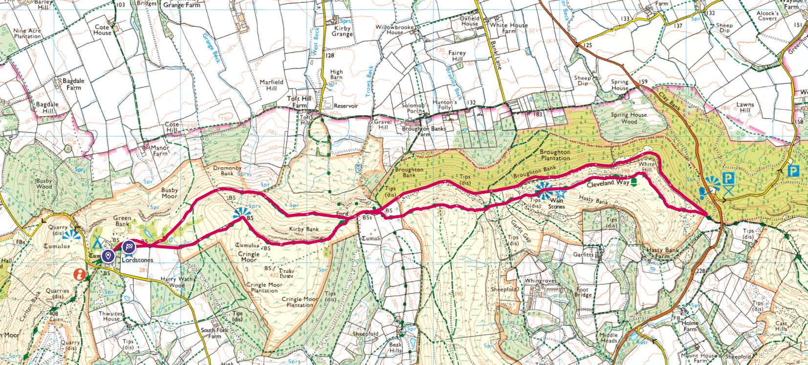

Along the Cleveland Way, up the hill to the peak at Cringle Moor, then another peak at Cold Moor and onwards to the Wainstones. Very hilly and passing through the Wainstones does involve a bit of scrambling over large rocks.
After a lot of uphill and downhill I chose a nice, level path along the bottom of the hills for the return journey.
This is the route, as with all Lordstones routes I parked at Lordstones Country Park. The southernmost path first to get the peaks done, then a simple, level walk back on the slightly more northern path..
